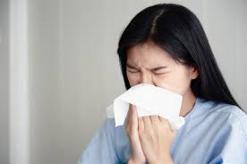
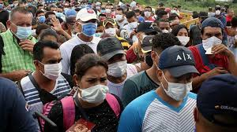
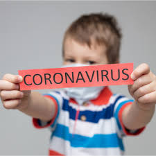

La maladie à coronavirus 2019 ou Covid-19 (acronyme anglais de coronavirus disease 2019) est une maladie infectieuse émergente de type zoonose virale causée par une souche de coronavirus appelée SARS-CoV-2. Les symptômes les plus fréquents en sont la fièvre, la toux et la gêne respiratoire et, plus rarement, un syndrome de détresse respiratoire aiguë pouvant entraîner la mort, notamment chez les personnes rendues fragiles par l'âge ou des comorbidités. Une autre complication mortelle est une réponse exacerbée du système immunitaire (choc cytokinique).
Comment se propage le COVID-19 ?

Le virus se transmet par contact direct avec les gouttelettes respiratoires produites par une personne infectée (lorsqu’elle tousse ou éternue) et au contact de surfaces contaminées par le virus. Le virus du COVID-19 peut survivre sur les surfaces pendant plusieurs heures, mais de simples désinfectants peuvent le tuer.
Quels sont les symptômes du coronavirus ?

Les symptômes peuvent inclure de la fièvre, de la toux et un essoufflement. Dans les cas les plus graves, l’infection peut provoquer une pneumonie ou des difficultés respiratoires. Plus rarement, la maladie peut être mortelle.
Ces symptômes sont comparables à ceux de la grippe (influenza) ou d’un rhume banal, des maladies beaucoup plus courantes que le COVID-19, d’où la nécessité de procéder à des examens afin de confirmer qu’une personne est bien atteinte du COVID-19. Dans tous les cas, il est important de se rappeler que les principales mesures de prévention restent les mêmes : il convient de se laver fréquemment les mains et d’observer une hygiène respiratoire (se couvrir la bouche et le nez avec le pli du coude ou un mouchoir en cas de toux ou d’éternuement, puis jeter le mouchoir dans une poubelle fermée). Par ailleurs, n’oubliez pas qu’il est possible de se faire vacciner contre la grippe, donc assurez-vous que votre enfant et vous êtes à jour dans vos vaccins.
Comment éviter les risques d’infection ?
Voici quatre précautions que votre famille et vous pouvez prendre pour éviter l’infection :
Lavez-vous fréquemment les mains avec de l’eau et du savon ou avec un désinfectant pour les mains à base d’alcool Couvrez-vous la bouche et le nez avec le pli du coude ou un mouchoir lorsque vous toussez ou éternuez Évitez tout contact rapproché avec des personnes présentant des symptômes comparables à ceux d’un rhume ou de la grippe Consultez un médecin en cas de fièvre, de toux ou de difficultés à respirer
Dois-je porter un masque médical ?
Le port d’un masque médical est conseillé si vous présentez des symptômes respiratoires (toux ou éternuements) afin de protéger les personnes qui vous entourent. En l’absence de symptômes, il n’est pas nécessaire de porter un masque.
Si vous portez un masque, assurez-vous de l’utiliser et de l’éliminer correctement afin de garantir son efficacité et de ne pas aggraver les risques de transmission du virus.
La seule utilisation d’un masque ne suffit pas à arrêter les infections et doit être associée à d’autres mesures : se laver fréquemment les mains, se couvrir la bouche et le nez lorsque l’on éternue et que l’on tousse, et éviter tout contact rapproché avec des personnes présentant des symptômes comparables à ceux d’un rhume ou de la grippe (toux, éternuements et fièvre).
Le COVID-19 touche-t-il les enfants ?

Il s’agit d’un nouveau virus si bien que nous manquons encore de données sur ses effets sur les enfants et les femmes enceintes. Nous savons que des personnes de tous les âges peuvent être infectées par le virus, mais, pour l’heure, relativement peu de cas de COVID-19 ont été signalés chez les enfants. Le virus n’est mortel que dans de rares cas et les décès enregistrés jusqu’à présent ont principalement concerné des personnes plus âgées qui avaient déjà des problèmes de santé.
Que faire si un membre de ma famille présente des symptômes ?
Consultez rapidement un médecin si vous toussez, ou si vous avez de la fièvre ou des difficultés à respirer, ou si vous observez les mêmes symptômes chez votre enfant. Pensez à prévenir au préalable votre médecin par téléphone si vous vous êtes rendu(e) dans une région dans laquelle des cas de COVID-19 ont été signalés ou si vous avez eu des contacts rapprochés avec une personne qui a voyagé dans l’une de ces régions et qui présente des symptômes respiratoires.